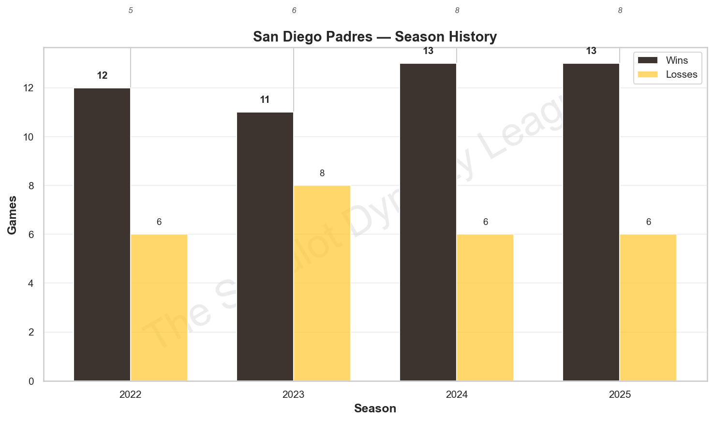
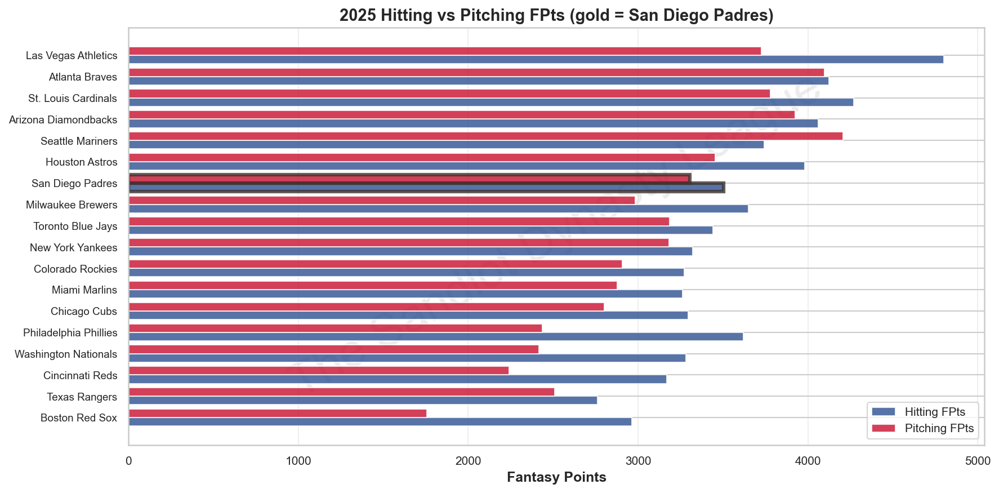
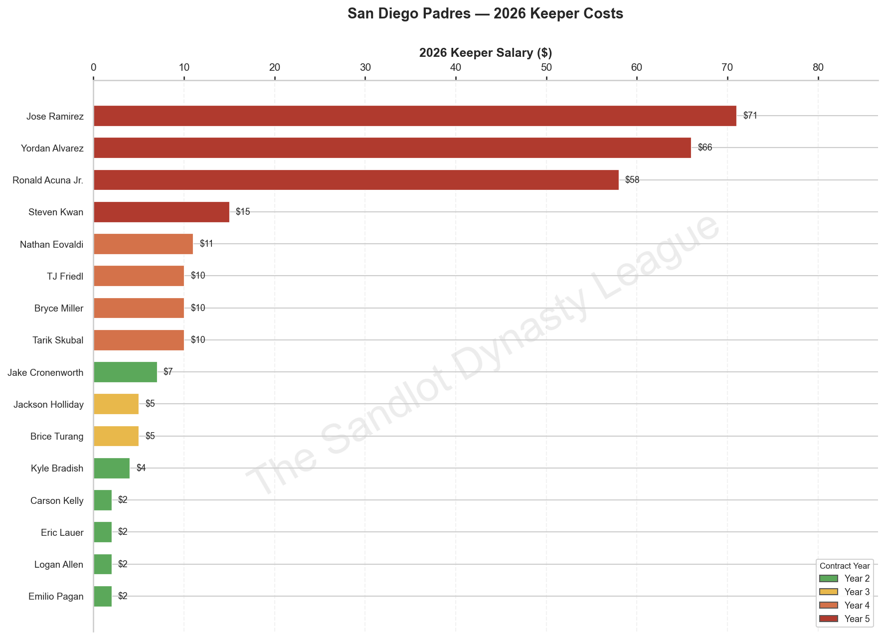
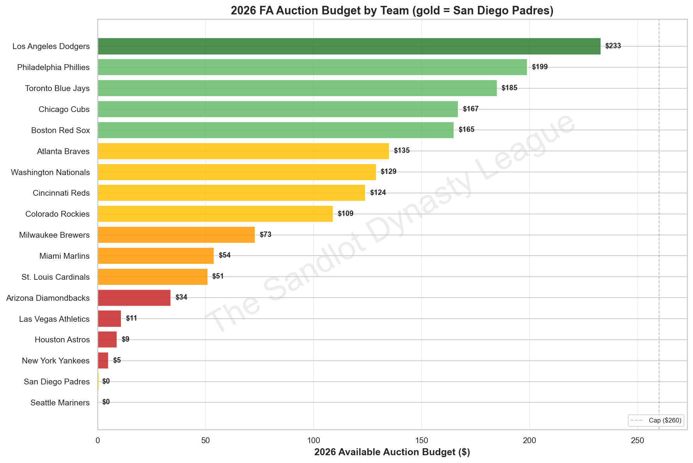

Brad Richardson has built one of the most consistently excellent franchises in the four-year history of the Sandlot Dynasty League. Forty-nine wins, a 65.3% all-time winning percentage, and four consecutive playoff appearances since the league's founding. On paper, the San Diego Padres look like a dynasty. The regular season record says dynasty. The postseason record tells a different story entirely.
Four straight playoff appearances. Four straight first-round exits. In 2022, the Padres stumbled out in the quarterfinals. In 2023, same story. The 2024 and 2025 campaigns came with bigger rosters, bigger expectations — and the same gut-punch result: out in the first round, watching someone else celebrate while Brad headed to the consolation bracket. Last year, it was the St. Louis Cardinals who delivered the verdict, a 714–517 divisional round demolition that was never really that close. St. Louis finished second in the entire league. Cold comfort.
The question for 2026 isn't whether Brad Richardson can field a competitive team. He absolutely can — he's done it four consecutive years. The question is whether he can finally solve the problems that keep knocking him out before the final bell. And this offseason has handed him a new puzzle to solve: at $280 in confirmed keeper commitments against a $260 auction cap, the Padres are entering spring $20 over budget. Somebody significant has to go before March 22. The only question is who — and whether the answer changes the team's playoff ceiling or just creates new questions.
Let's run the 2025 activity in chronological order, because the sequence matters.
The MiLB Slow Draft was, frankly, the highlight of Brad's 2025 offseason — and it may prove to be the most consequential roster decision he's made in four years. Drafting from the #14 slot, Richardson added four new prospects while retaining six from the prior year's system. The new picks: JJ Wetherholt (Round 1), Jarlin Susana (Round 2), Cole Carrigg (Round 3), and Braxton Ashcraft (Round 4). The retained group — Walker Jenkins, Cole Young, Noble Meyer, Daniel Espino, Endy Rodriguez, and Tommy Troy — rounded out one of the deeper farm systems in the league entering last season.
The headliner is Wetherholt. Taking a consensus top-five prospect with the 14th overall selection is what happens when the market corrects. Whatever Richardson gave up in pick position, he got it back in talent. We'll revisit the system in detail below, but calling Wetherholt a franchise-altering acquisition would not be hyperbole.
The FA Auction told a story of confident restraint. Richardson spent just $18 total — less than a dozen teams spent on a single player — acquiring Jake Cronenworth ($6), Jose Caballero ($8), Kyle Bradish ($3), and Thairo Estrada ($1). A team that spends $18 at auction either can't afford more or doesn't need more. In San Diego's case, it was the latter — the core was intact, the depth was serviceable, and throwing cash at overpriced free agents wasn't going to push them over the top. That philosophy is defensible. It also left them without insurance when the year went sideways in spots.
In-season trades were a mixed bag. The trade with Milwaukee in May — sending Jeffrey Springs ($4, Year 2) for Mike Yastrzemski and Mitchell Parker — didn't bear significant fruit and amounts to roster churn. The August deal with Boston was more interesting on its face: SDP acquired Cedric Mullins ($27, Year 4) in exchange for Tommy Troy ($0, Year 1 MiLB). Trading a prospect for a rental-priced outfielder isn't automatically a mistake — Mullins put up 321 FPts over 133 games in 2025 — but Troy had real prospect appeal, and paying $27 for an outfielder who would need to be renewed at $32 was always a short runway play. Richardson cut Mullins this offseason rather than absorb that escalation. The trade produced some results but no lasting value.
The FAAB wire was more productive than the trades. Emilio Pagan, claimed for a dollar, delivered 384.5 FPts at 5.5 per game — one of the better waiver pickups in the league last year and now a confirmed keeper heading into 2026. Eric Lauer, also acquired for $1, posted 278.5 FPts at an excellent 9.9 FPts per start over 28 appearances. Both will be discussed extensively in the core review. In-season management grade: B
The 2025 Padres were a legitimately excellent regular season team buried inside a frustrating playoff outcome. They finished 13-6 — tied for the fourth-most wins in the league — and ranked fifth overall, scoring 5,663.5 fantasy points with a near-even 51.5% hitting, 48.5% pitching split. Their 3.9 FPts per game was right at league average, but their overall output was above it: SDP ranked above the league mean in total production while finishing fifth in the standings.
The weekly arc told a story of early fire and late fade. San Diego started 0-1, then rattled off seven straight wins to reach 7-1 and a peak power ranking of #3. From there, the cracks appeared. They went 6-5 over the final 11 regular season weeks, dropping three in a row from Weeks 9–10 and stumbling into the playoffs on a 1-3 run in the final four weeks. Their win over Philadelphia in Week 17 (272.5–164.5) kept them above water. A 135-point blowout loss to Arizona in Week 18 was a warning sign that went unheeded.
The postseason was a disaster, full stop. Matched against the 4-seed Cardinals in the divisional round, San Diego scored 517 points — not a bad week by any measure — and still lost by 197. St. Louis posted 714 points that week, one of the highest single-week outputs in league history. You can't plan for that. What you can plan for is avoiding getting blown out at home in Round One for the second consecutive year. Two years in a row as the fifth seed, two years in a row bounced by a top-four team before the conference round. The pattern is real.
The Arizona blemish deserves its own sentence: 0-6 all time against the Diamondbacks, with an average margin of −74 points. Arizona won the championship last season as an 8-seed. They are SDP's personal kryptonite and the league's current measuring stick.
The best in-season FAAB story of the year was Emilio Pagan, claimed off waivers for $1 on April 1 and retained on the 2026 roster. The veteran reliever posted 384.5 FPts over 70 games at 5.5 FPts per appearance — the kind of return that wins championships when it's filling out your bullpen at zero cost. The fact that Richardson kept him heading into 2026 (at $2 for Year 2) reflects exactly the right instinct. Season grade: B

Seven players are gone from the 2025 roster. Some of these decisions were obvious. One is genuinely head-scratching.
Cedric Mullins ($27, Year 4 → would cost $32): The August trade acquisition delivered 321 FPts over 133 games, but the math never penciled. Mullins at $32 in Year 5 is an aging outfielder on the wrong side of 30 chewing up a quarter of your roster budget. Richardson correctly identified the sunk-cost fallacy here and moved on.
Paul Goldschmidt ($12, Year 1): Goldschmidt posted 317 FPts at 1B in 146 games — genuinely useful production — but at 32 years old with a $12 Year 1 price tag that would only climb, keeping him for 2026 at $13 made little sense given the position scarcity and the broader salary situation the Padres face.
Logan O'Hoppe ($5, Year 3 → would cost $10): O'Hoppe produced 194.5 FPts in what appeared to be a limited role season. With Carson Kelly already locked in at catcher for $2, paying $10 for a backup catcher was unjustifiable. Clean cut.
Michael Kopech ($1, Year 1): 38 FPts. The $1 was not worth it. Moving on.
Cody Bradford ($2, Year 2): No 2025 FPts on record — Bradford clearly had a lost season. Releasing him at $2 saved a roster slot that's desperately needed given the upcoming salary decisions.
Colin Rea ($2, Year 2 → would cost $5): Here's where it gets interesting. Rea posted 336.5 FPts over 28 starts at a remarkable 9.9 FPts per outing. That's meaningful pitching production at what would have been a $5 price tag — outstanding value by any measure. Releasing him alongside the next name on this list suggests Richardson was prioritizing roster flexibility over depth.
Ronny Henriquez ($1, Year 1 → would cost $2): This is the cut that will haunt the 2026 projection. Henriquez produced 350 FPts over 69 games at 5.1 FPts per appearance. He would have cost exactly $2 to retain. That's elite reliever production at replacement-level cost, and Richardson let him walk. Henriquez is now available in the FA pool where he'll likely get bid up significantly by teams that weren't paying attention last season. The Padres will watch him from the other side of the auction table. This was a mistake.
Four straight playoff appearances. Four straight first-round exits. The San Diego Padres are the most beautifully frustrating franchise in the TSDL — consistently excellent, perpetually just short.

Sixteen players carried over from 2025, totaling $280 in keeper salary — a figure that, as we've established, needs to come down before the auction. Let's walk through the roster from top to bottom and figure out what Brad Richardson actually has.
Ramirez finished seventh in TSDL-wide production last season with 604 FPts over a full 158 games — one of the most reliable contributors in the league. He hit 187 home runs' worth of fantasy value (as part of the team's hitting total), and his consistency week over week is what legitimate contenders are built around. At $71 in Year 5, he's already among the league's highest-paid players, and next year that salary climbs to $76. The contract is reaching the danger zone. The production still justifies it — barely — but the math gets harder every season. Ramirez is the keystone. For now.
The best value on this roster. Skubal posted 603.5 FPts at 19.5 FPts per start — that's the eighth-ranked player in the entire TSDL last season, acquired and maintained for $10 in Year 4. His per-game production is extraordinary. When healthy and locked in, he's one of the two or three best starting pitchers in the league. At $10, he's an absolute steal. At $15 next year in Year 5, he'll still be a steal. Richardson should feel excellent about this contract for at least another two seasons.
This is the most complicated name on the roster. Acuna produced 331 FPts — genuine top-tier output when active — but only played 95 games, leaving 67 games of potential production on the table. At $58 in Year 5 heading to $63 in Year 6, the calculus requires Acuna to be close to a full-season contributor. His upside when on the field remains among the highest in the league. His fragility is the asterisk that turns a cornerstone into a liability at this price point.
Turang quietly posted 465 FPts at second base in 156 games — fourth on the team in production — at the league's most underpriced Year 3 contract. At $5 for a 156-game contributor at 2B, he's one of the better bargains in the league. He's a reliable above-average second baseman at a price that gives Richardson flexibility elsewhere. Don't overlook him: he's the kind of player who wins close matchups week after week.
Nathan Eovaldi ($11, Year 4) was spectacular in limited action: 415.5 FPts at 18.9 per start over 22 outings. His per-game numbers are Skubal-adjacent, and the concern is only that he's stayed at 22–25 starts per year in recent campaigns. If Eovaldi can get to 30 starts, he's the second ace on a legitimate two-headed rotation.
Steven Kwan ($15, Year 5) is a 156-game workhorse at 436 FPts. He's a solid above-average OF contributor at $15 — more expensive than his FPts/$ ratio ($29/$ — the worst among the non-premium-salary keepers) would suggest is optimal, but his reliability and game count justify the price at this stage of the dynasty. He'll cost $20 in Year 6.
TJ Friedl ($10, Year 4) delivered 414.5 FPts over 152 games — quietly one of the better OF value plays on the roster at 2.7/G. Jackson Holliday ($5, Year 3) was the third 2B eligible player at 360 FPts in 149 games; his positional flexibility and dynasty profile make him a long-term piece worth developing.
Emilio Pagan ($2, Year 2) and Eric Lauer ($2, Year 2) are both exceptional value. Pagan's 384.5 FPts at 5.5/G is legitimate closer-level production at $2. Lauer's 278.5 FPts over 28 starts at 9.9/G is excellent depth-starter value. Combined, they represent $4 in salary for over 660 FPts of production. Logan Allen ($2, Year 2) at 254 FPts and 8.5/G rounds out a genuinely deep, cheap pitching floor. Carson Kelly ($2, Year 2) provides serviceable catching depth at 268 FPts.
Then there are the questions. Yordan Alvarez ($66, Year 5) produced just 127.5 FPts in 48 games. At $66 — the third-highest salary in the Padres' system — that's a profoundly unsustainable production-to-cost ratio. Bryce Miller ($10, Year 4) posted 122 FPts over only 18 starts. Kyle Bradish ($4, Year 2) managed 87.5 FPts across 6 appearances. The three of them combined for 337 FPts at a total cost of $80. That's the structural rot underneath what is otherwise an impressive keeper roster.
Total 2026 keeper salary before cuts: $280. Available auction budget: −$20. Something must change. The salary map above shows exactly where the weight is concentrated.
The San Diego Padres may have the best minor league system in the TSDL right now. Nine of ten MiLB slots are filled with a mix of genuine blue-chip prospects, productive borderline major leaguers, and raw development arms. It's deep, it's credible, and it genuinely changes the long-term outlook for this franchise.
JJ Wetherholt (Age 23): The headliner. A consensus top-five prospect in all of fantasy baseball, Wetherholt was taken 14th overall in last spring's slow draft — meaning Richardson picked him up at significant draft value. He is, by every major scouting system, one of the best prospects in organized baseball, and the Padres own him at $0. This is the kind of asset that trades for established stars or simply graduates into a league-winning contributor. When Wetherholt reaches the majors, San Diego will have a Year 1 keeper at elite production cost. That's the dynasty dream.
Walker Jenkins (Age 20): A consensus top-15 prospect retained from the prior year's system, Jenkins is the kind of bat-first outfielder that carries fantasy lineups once he arrives. Twenty years old with top-15 prospect standing across multiple major scouting outlets. He may be two or three years away from full-time production, but when he arrives, he arrives as a potential cornerstone.
Jarlin Susana (Age 21): A new Round 2 addition, Susana ranks as a consensus top-75 arm and one of the more intriguing pitching prospects in the system. Hard-throwing 21-year-olds with top-75 prospect standing are exactly the kind of upside picks that pay off in dynasty leagues. There's development risk here, but the ceiling is real.
Cole Carrigg (Age 23): An interesting split between two major ranking systems — placed outside the top 250 by one outlet but inside the top 120 by another — Carrigg is a contested prospect profile. The divergence means he's either a sleeper or overrated depending on who you ask. Richardson got him as a pre-existing hold, so there's no sunk cost beyond the roster slot. Mid-range developmental upside.
Noble Meyer (Age 21): Rated as a consensus top-160 arm, Meyer is an arm worth watching at a relatively early age. Two ranking systems in general agreement here. Legitimate back-of-the-rotation ceiling with upside for more if the stuff develops.
Daniel Espino (Age 25): A consensus top-235 prospect. At 25, Espino's window to contribute as a legitimate prospect is narrowing — this year or next likely determines whether he's a useful major league contributor or a long-term system hold whose time has passed.
Cole Young (Age 22): No current consensus ranking but already showing real production with 124.5 FPts over 77 games in what appears to be MLB action. Young is a name to watch for a potential mid-season call-up or early-2026 promotion. At 22 with numbers on the board, he may be closer to contributing than his prospect ranking suggests.
Braxton Ashcraft (Age 26): Added in Round 4 of the 2025 draft, Ashcraft posted 156.5 FPts over 26 games — indicating legitimate MLB-level production in a part-time role. At 26, he's not a long-term dynasty stash; he's a right-now contributor who could push for a roster spot this season. Richardson should be tracking him closely for the March 15 call-up deadline.
Endy Rodriguez (Age 25): A pre-existing hold with minimal 2025 production (17 FPts/18 GP). At 25 without strong rankings, Rodriguez is a low-cost depth hold that may either break through in 2026 or get released to free up a slot for a more productive prospect.
Potential 2026 Call-Up Timeline: Braxton Ashcraft is the best candidate for a pre-auction call-up (before March 15 lock). Cole Young could contribute early-season (April–May). Cole Carrigg and Endy Rodriguez are mid-season targets at best. Wetherholt, Jenkins, Meyer, Susana, and Espino are all long-term stashes — none of them should be expected to contribute in 2026.
Farm grade: A− — Two bona fide top-15 prospects, a consensus top-75 arm, and productive MLB depth pieces. The ceiling here is legitimately franchise-altering.
The Padres have a very specific problem: they need to cut at least $21 in salary before March 22 to have any auction budget at all. Let's rank the most likely candidates.
Yordan Alvarez — OF | $66 | Year 5
This is the most important roster decision Brad Richardson will make this offseason, and the answer should be obvious: Alvarez has to go. Forty-eight games played, 127.5 FPts, and a $66 salary that would jump to $71 next year in Year 6. There is no universe in which $66 of auction budget is worth less than what Alvarez provides from the active roster in his current state. Releasing Alvarez frees $66 and transforms SDP's auction budget from −$20 to a workable $46. He was the league's most expensive kept player producing replacement-level output. Yes, his upside when healthy is elite — that upside has been on a payment plan for two seasons now. Cut him, buy him back in the auction for $15–$20 if he shows up healthy, and free your balance sheet. Holding Alvarez heading into March 22 would be the most expensive mistake Richardson could make this offseason.
Bryce Miller — SP | $10 | Year 4
Miller posted 122 FPts over just 18 starts in 2025. At 6.8 FPts per start, he's producing at replacement-level starting pitcher territory — and for a team that already has Skubal, Eovaldi, Lauer, and Allen in the rotation, Miller represents dead money at $10. The SP free agent pool this year is rich: multiple starters who produced 400+ FPts last season are available. Miller heading into Year 4 at $10 with this production history is not a pitcher you're paying for ceiling; you're paying for name recognition. Release him and spend that $10 on a free agent with actual recent production.
Kyle Bradish — SP | $4 | Year 2
Bradish has the dynasty upside to warrant consideration — he ranked as an above-average starting pitcher by every internal metric before his 2025 injury. But he produced 87.5 FPts in just 6 starts last year. At $4 for Year 2, the cost is modest, but his uncertainty heading into 2026 makes him a speculative hold at best. Richardson can save the $4, free up the roster slot, and potentially grab Bradish back in the auction at $1–$3 if he shows he's healthy. This is a low-stakes cut that creates real flexibility.
$66 for 48 games of Yordan Alvarez isn't a keeper decision — it's a hostage situation. Cut him, buy him back at auction for a fraction of the price, and let someone else absorb the Year 5 contract risk.
If Richardson cuts Alvarez and Miller (saving $76 total), the 2026 keeper salary drops to $204 and the auction budget opens up to $56 — enough to meaningfully pursue top free agents. Adding the Bradish cut brings it to $207 keeper salary and $53 budget. The combination of those three moves transforms the Padres' auction position from desperate to competitive.
The Padres' 2026 auction strategy begins with a simple premise: you cannot spend what you do not have. At −$20 heading in, Richardson must act before discussing acquisition strategy. Every calculation below assumes the minimum cut of Yordan Alvarez, which brings the budget to approximately $46. Additional cuts (Miller, Bradish) could push that to $56–$60.
In the context of the league, $46–$60 is below average but not negligible. The Los Angeles Dodgers ($233), Philadelphia Phillies ($199), and Toronto Blue Jays ($185) will dominate the premium end of the market. The Cardinals ($51), Nationals ($129), and Braves ($135) all have significant advantages over San Diego's position. The Padres are not a buyer who controls the auction — they are a team that needs to be strategic, identify specific targets, and avoid bidding wars they cannot win.
Here's where to look in the confirmed free agent pool, organized by position of need.
First priority — Pitching reinforcement: With Skubal and Eovaldi leading the rotation, SDP needs a third starter who can give them quality starts in the second half of the season. Zack Wheeler (446.5 FPts, SP) is one of the better arms available and will command $30–$45 from teams with real budget. That's too rich for SDP. More realistic: Luis Castillo (422 FPts) or Kevin Gausman (451.5 FPts) in the $15–$25 range if other teams pass. At the cheap end, Brady Singer (373.5 FPts) and Jose Berrios (347 FPts, likely cut by Seattle) represent solid $5–$12 bids that could return immediate rotation value.
Second priority — A hitting upgrade: The Padres are deep at 2B (Turang, Holliday) and OF (Kwan, Friedl, and a returning Acuna at whatever percentage he's healthy). The true gap is at first base and SS, where they have no confirmed keepers. Rafael Devers (522 FPts, 3B) is an attractive target but will draw $35–$50 bids from budget-rich teams. More realistic: Spencer Steer (354.5 FPts, 1B/2B/3B/SS) in the $10–$18 range — multi-positional value at a price SDP can actually afford. Christian Walker (371.5 FPts, 1B) in the $12–$20 range is another reasonable option.
Shohei Ohtani (680.5 FPts, DH/SP) will likely go for $80–$120+ to a team with real budget. The Phillies, Jays, or Dodgers will win that bidding war. San Diego should note the name, appreciate the production, and redirect attention to value. Juan Soto (661.5 FPts, OF) presents a version of the same story — out of reach for a $46 budget team.
Supplemental targets from the speculation pool: If Jose Berrios gets cut by Seattle (a real possibility given their budget crunch), he'd be a strong $8–$15 arm in a thin market. Trevor Story, also potentially cut by Seattle, is a $5–$10 gamble at SS with real 2025 production (465 FPts) for a team willing to absorb the injury risk. Worth a minimum bid if available.
The Padres should enter the auction with a clear spending target: acquire one quality starting pitcher and one everyday position player, spending $35–$45 total, and leave the rest for FAAB reserve. Overpaying for one player at the expense of the rest of the season's roster flexibility has hurt this team in past years. Budget discipline with a clear purpose is the 2026 mandate.

The 2026 MiLB slow draft runs March 15–22, and San Diego enters from the #14 overall position with nine of ten minor league slots already filled. That means they have exactly one open slot and will need to release a current MiLB player to add anyone new.
The March 15 call-up deadline is the first order of business. Braxton Ashcraft is the obvious candidate for promotion — 156.5 FPts at age 26 suggests he's ready to contribute at the major league level, and a pre-auction call-up would free his MiLB slot for a draft pick. Similarly, Cole Young at 22 with 124.5 FPts on the board could be considered for early promotion if Richardson wants the roster production now rather than later.
If slots open up — either through call-ups or releases of Rodriguez or Espino — Richardson should be targeting pitching at the lower rounds. The Padres are loaded on the hitting prospect side (Wetherholt, Jenkins, Carrigg, Young) and relatively thin on impact arms beyond Susana and Meyer. A high-upside power arm in rounds three or four would diversify the system and hedge against the volatility inherent in pitching development.
Endy Rodriguez and Daniel Espino are the natural cut candidates if Richardson wants to create flexibility. Espino at 25 is running out of developmental runway; Rodriguez barely appeared in 2025. Either slot freed would give SDP a pick to use on a new prospect at #14, which in a deep draft class could yield genuine value.
The Padres don't need to win this draft. They already have arguably the two best prospects in the league. The goal here is system depth and pitching pipeline — not swinging for another consensus top-25 pick at slot 14. Steady hands, targeted acquisitions, and one clean roster decision.
Projected Record: 12–7 to 13–6
Playoff Seed: #4 or #5
Playoff Ceiling: Conference semifinal — if Skubal and Eovaldi both stay healthy and the auction adds real hitting depth
Floor: First-round exit for the fifth consecutive year, if Acuna underperforms again and the auction yields nothing
Bold Call: Brad Richardson cuts Alvarez and Ramirez — yes, both — pockets $137 in freed salary, enters the auction with $77 to spend, acquires Ohtani or Soto in a calculated blow-the-budget move, and rebuilds the roster around the farm system for the next three-year window. It's the right call. He probably won't make it. But it's the right call.
There's no denying what Brad Richardson has built in San Diego. Forty-nine wins. Four playoff appearances. One of the most talented minor league systems in the league, headlined by two of the best prospects in organized baseball. The roster has Tarik Skubal at $10, Brice Turang at $5, Logan Allen at $2 — extraordinary value contracts scattered throughout a well-constructed depth chart.
But the weight of the top end is becoming a problem. Jose Ramirez at $71 and Ronald Acuna Jr. at $58 are legitimate stars when healthy and productive. Together they consume nearly half the auction cap before a single free agent is signed. Toss in Steven Kwan at $15, Nathan Eovaldi at $11, and two players ($66 Alvarez, $10 Miller) who combined for 250 FPts last year on $76 in commitments, and you have a team that is dangerously overextended at the top while hoping the depth holds everything together.
The 2026 TSDL season begins with the same fundamental question it always does for the Padres: will this be the year they break through the playoff bracket? The answer depends almost entirely on decisions Richardson makes in the next ten days. Cut the right players. Spend the freed budget wisely. Get Acuna healthy. Trust Skubal and Eovaldi to anchor a rotation that can actually win in October rather than just the regular season.
Four years of making the playoffs. Zero series wins. The Padres are perpetually one good decision away from contending and one bad one away from the consolation bracket. In 2026, the decisions are right in front of them. The question is whether Brad Richardson has the stomach to make the uncomfortable moves that this roster genuinely requires — or whether he'll play it safe, stay the course, and find himself back in the consolation bracket come October.
The dynasty pieces are in place. The core is real. JJ Wetherholt and Walker Jenkins are coming. The clock is ticking — and for the first time in four seasons, the path forward is clearer than the path that got here.